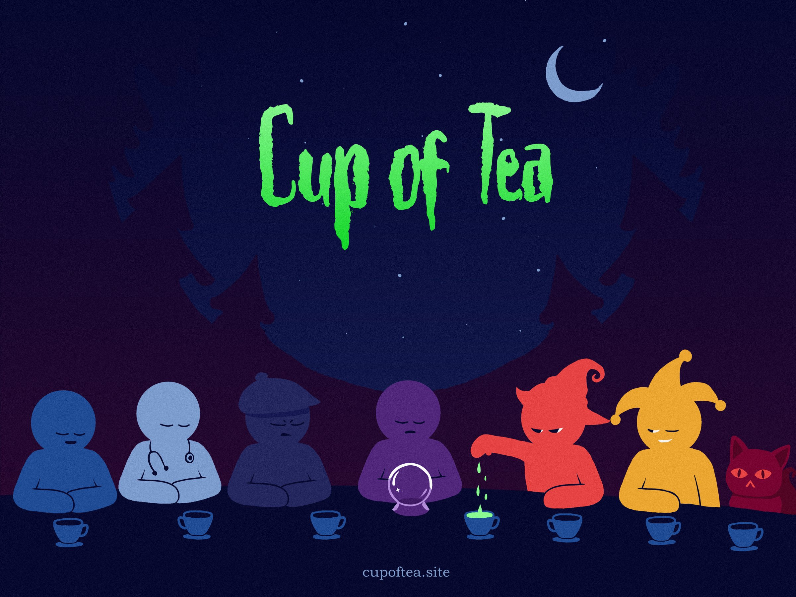
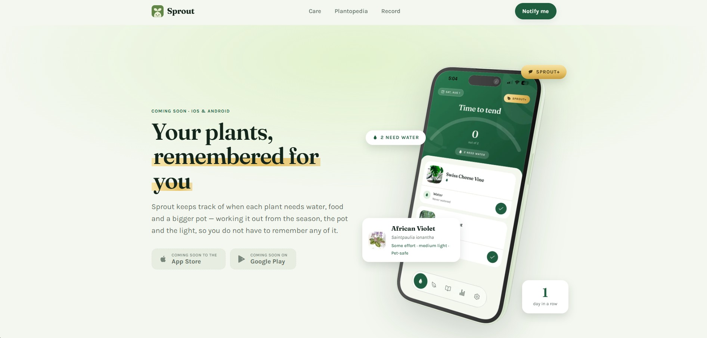
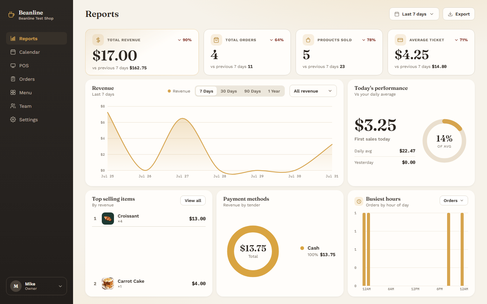

FeaturedWhy clients hire me
I focus on outcomes, communication, and clean execution.
I keep projects moving with clear updates, practical decisions, and production-quality code that is easy to maintain.
01
Fast Turnaround
Clear milestones and steady weekly delivery.
02
Business-Focused Builds
Websites designed to convert and support real goals.
03
Reliable Communication
Organized updates and responsive collaboration.
Work experience
Where I have built and shipped
From freelance game development and pixel art to full stack engineering, document automation and knowledge graphs.
-
May 2022 – August 2026
Graphic Artist / Game Developer
Upwork · Freelance
- Designed and delivered pixel art UI, characters, and in-game assets that met each client's technical requirements and visual standards.
- Built gameplay features in Unity, collaborating through Git in an Agile workflow, and earned a 100% Job Success score and Top Rated status.
-
August 2026 – Present
Full Stack Developer
GoGlobalStaffing
- Built and shipped full-stack internal tools end to end (React, Next.js, TypeScript, Cloudflare Workers, D1, R2), including an editable document-review workflow with an interactive scan viewer, reviewer locking and a shared cache of verified records.
- Automated manual document review with a PaddleOCR pipeline (Python, Node.js, GPU server behind a Cloudflare Tunnel) and fuzzy-matching logic that extracts names with confidence scores, using free, self-hosted processing to keep costs down.
- Built a lead knowledge graph that syncs to Obsidian through Koofr (WebDAV, Markdown wikilinks) so clients can explore connected properties and owners in Graph View, backed by automated tests, CI and feature-branch releases.
Selected work
Projects
A selection of client sites, product tools, and workflow automations. Click any project to see the full case detail.
Apps & Sites
Mobile & web development
Featured
Featured
 Featured
Featured
 Featured
Featured
 Featured
Featured


Automations
Workflow automation — n8n Featured
Featured
Continuous learning
Certifications
Formal coursework I completed to sharpen the engineering and AI side of my practice.

Coursera
July 2026AI Agents and Agentic AI with Python & Generative AI
Vanderbilt University's course on building complete AI agent frameworks in Python, including tool discovery systems, function calling, and production-ready agents.
View certificate
Coursera
July 2026Hands-On Automation with n8n & Workato
Hands-on automation course focused on building workflows with n8n and Workato, including automation design, integrations, and process orchestration.
View certificate
Coursera
July 2026Supervised Machine Learning: Regression and Classification
Andrew Ng's Coursera program covering core machine learning concepts, including regression models, classification, and practical model evaluation.
View certificate
Coursera
July 2026SQL Foundations
Microsoft's SQL Foundations course on Coursera, covering SQL fundamentals, relational database concepts, and practical querying workflows.
View certificate